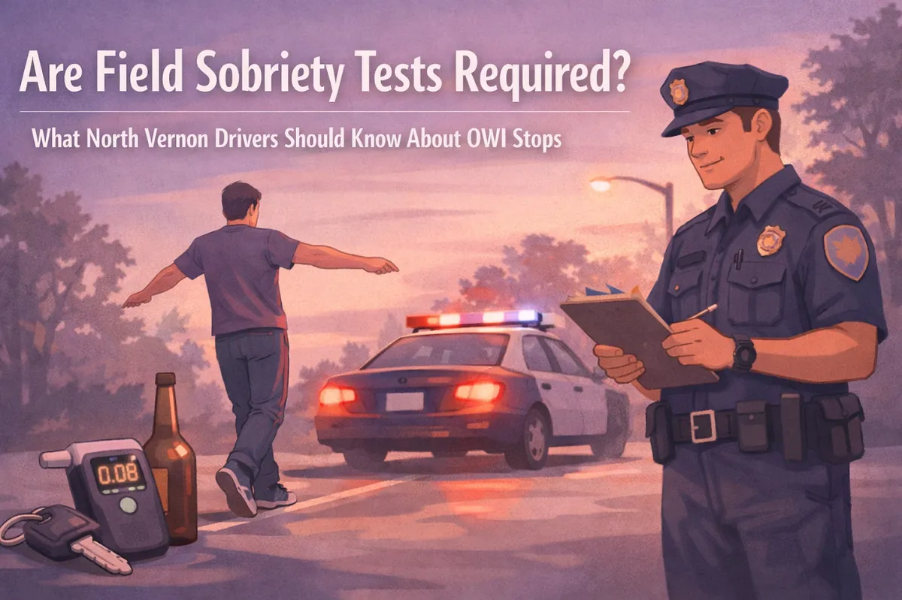
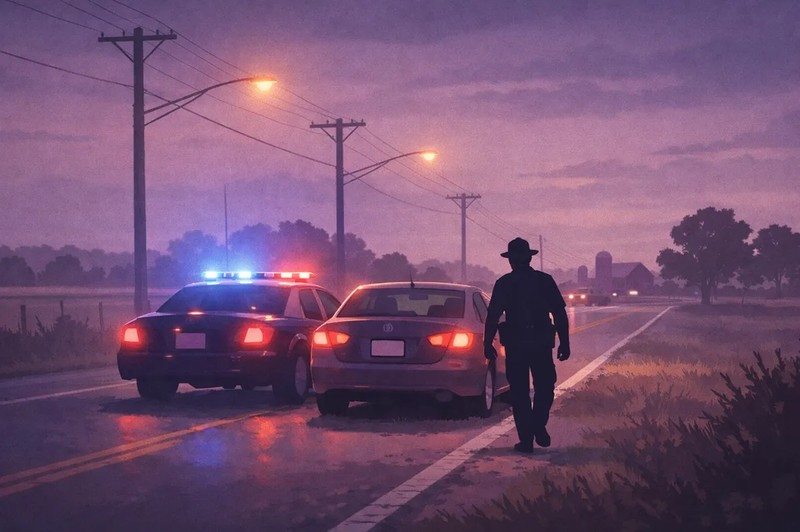
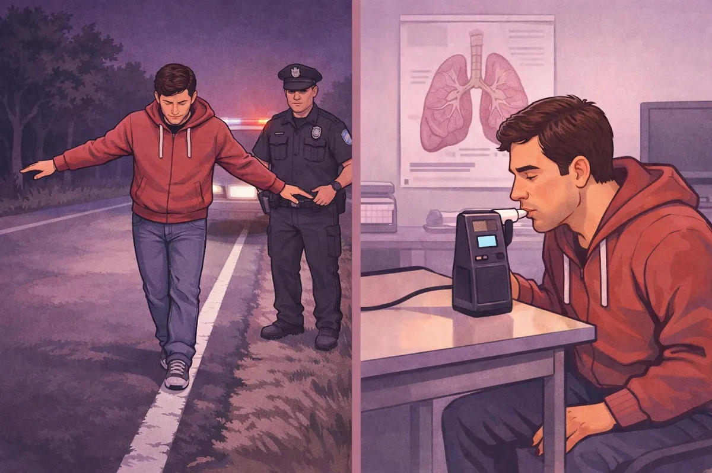
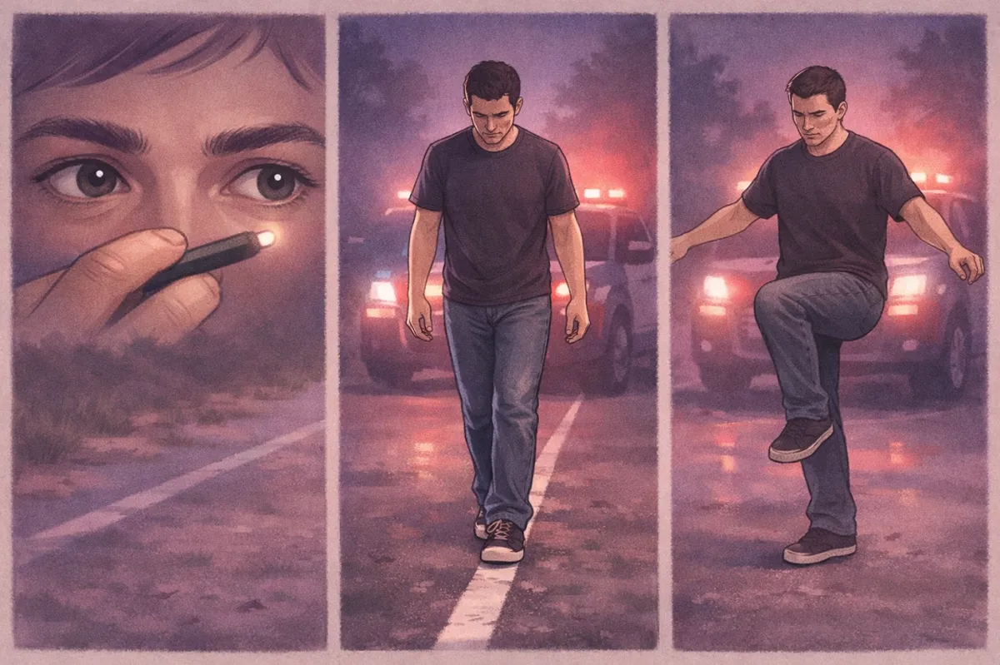

Are Field Sobriety Tests Required? What North Vernon Drivers Should Know About OWI Stops

You're driving home through North Vernon after dinner with friends. Blue lights flash in your rearview mirror. Your heart races even though you only had one beer two hours ago. The officer walks up, asks a few questions, and then says those words: "I need you to step out of the vehicle and perform some field sobriety tests."
Here's what most people don't know: You can say no.
But before you make any decisions during a traffic stop, you need to understand what you're actually required to do versus what's optional. The difference could change everything about your case.
The Short Answer: Field Sobriety Tests Are Voluntary
Let's get straight to it. In Indiana, field sobriety tests are not required by law. These are the physical tests where an officer asks you to walk a straight line, stand on one leg, or follow a pen with your eyes. You have the legal right to politely decline these tests.
There's no automatic penalty for refusing them. Your license won't be suspended. You won't get an additional charge just for saying "no, thank you."
But: and this is important: that doesn't mean refusing them makes the situation go away.

The Big Difference: Field Tests vs. Chemical Tests
Here's where people get confused, and it matters a lot.
Field sobriety tests are those physical coordination tests done on the side of the road. These are voluntary.
Chemical tests are breathalyzers, blood tests, or urine tests that measure your actual blood alcohol content. These fall under something called Indiana's "implied consent law."
When you got your Indiana driver's license, you agreed to submit to a chemical test if an officer has reasonable suspicion you're driving impaired. If you refuse a breathalyzer or blood test, your license gets automatically suspended for one year (or two years if you've had a prior OWI).
So you can refuse the walk-and-turn test without losing your license. But if you refuse the breathalyzer after being arrested, that's a different story.

What Happens When You Refuse Field Sobriety Tests
Officers don't like it when you decline field tests, but they can't force you to do them. What they can do is use your refusal as part of their investigation.
They might note in their report that you "refused to cooperate." They might use it to build a case that you knew you were too impaired to pass. And most importantly, they'll often move directly to requesting a chemical test instead.
Here's how it typically plays out on a stop along State Road 3 or coming through Vernon:
Officer pulls you over for a traffic violation or suspicious driving
Officer smells alcohol or notices other signs of impairment
Officer asks you to perform field sobriety tests
You decline
Officer arrests you based on other observations (odor, slurred speech, bloodshot eyes)
Officer requests a chemical test at the Jennings County Jail or a local hospital
So refusing field tests doesn't necessarily prevent an arrest. It just removes one piece of evidence the prosecutor might use against you.
The Three Standard Tests (And Why They're Problematic)
If you do agree to perform field sobriety tests, here's what you're likely facing:

The Horizontal Gaze Nystagmus (HGN) Test. The officer holds a pen or small light about 12-15 inches from your face and moves it side to side. They're watching for involuntary jerking in your eyes, which can indicate intoxication. The problem: Your eyes can jerk for dozens of reasons that have nothing to do with alcohol. Fatigue, certain medications, neurological conditions, even caffeine can cause this.
The Walk-and-Turn Test. You're told to walk nine steps in a straight line, heel to toe, turn around, and walk back the same way. You're supposed to keep your arms at your sides and count each step out loud. The problem: This test is designed to be difficult even when you're stone-cold sober. Add in uneven pavement, gravel on the shoulder of the road, poor lighting, uncomfortable shoes, or a back injury, and suddenly a sober person looks impaired.
The One-Leg Stand Test. You lift one foot approximately six inches off the ground and hold it there for 30 seconds while counting out loud. The problem: Anyone with knee problems, hip issues, balance disorders, or who's overweight might struggle with this test. Officers are looking for specific "clues" like swaying, using arms for balance, or putting your foot down. But these aren't reliable indicators of intoxication.
Why These Tests Fail Sober People
I've seen plenty of cases here in Jennings County where completely sober drivers failed field sobriety tests. Here's why:
Medical conditions matter. Inner ear problems throw off your balance. Neurological conditions affect coordination. Leg or back injuries make physical tests nearly impossible. But officers don't always ask about these conditions before administering tests.
Environment matters. A dark roadside at night with cars whizzing past is not a controlled testing environment. Uneven ground, loose gravel, rain, cold weather: all of these make the tests harder. I've had clients who were asked to perform tests on a sloped shoulder of the road.
Nerves matter. Even if you haven't had a drop to drink, being pulled over is stressful. Your hands might shake. You might have trouble concentrating on complex instructions. Officers sometimes interpret nervousness as guilt.
The tests are subjective. There's no camera measuring exactly how many inches you sway or whether your heel truly touched your toe. It's the officer's opinion. And if they've already decided you're impaired based on other factors, confirmation bias kicks in.
What North Vernon Drivers Should Do During an OWI Stop
If you're pulled over in North Vernon, Hayden, Scipio, or anywhere in Jennings County, here's my practical advice:
Be polite and respectful. Getting argumentative never helps. Answer basic questions like your name and where you're going. But remember: you're not required to answer questions designed to incriminate you.
You don't have to explain where you've been or whether you've been drinking. You can politely say, "I'd prefer not to answer that question."
You can decline field sobriety tests. If you have any medical conditions that would affect your performance, declining is probably smart. If you're nervous or if it's dark and the road conditions are poor, declining might be the right call.
Understand the chemical test decision is more serious. If you're arrested and taken to the Jennings County Jail, refusing the breathalyzer means automatic license suspension. Sometimes it's still the right decision depending on your situation, but you need to understand the immediate consequence.
Call an attorney as soon as possible. Whether you performed the tests or refused them, whether you took the breathalyzer or declined it: call someone who knows how these cases work in the local court system.
The Jennings County Court System and OWI Cases
OWI cases in Jennings County move through the local court system here in Vernon. The prosecutor reviews the evidence: the officer's observations, any video from the traffic stop, field test results if you took them, chemical test results if available.
Every case is different. Sometimes the stop itself was questionable. Sometimes the tests were administered incorrectly. Sometimes there are medical explanations for behavior the officer thought indicated impairment.
I handle OWI cases here in Jennings County. I know the local prosecutors. I know how the court tends to handle first-time offenses versus repeat offenses. I know what evidence tends to matter and what defenses actually work in this courthouse.
The most important thing is to have someone who listens to your specific situation and gives you real options. Not just someone who tells you what you want to hear, but someone who explains what's actually possible based on the facts of your case.
You Don't Have to Navigate This Alone
An OWI charge feels overwhelming. You're worried about losing your license, losing your job, the cost of fines and increased insurance. You're probably replaying the traffic stop in your mind, wondering what you should have done differently.
Here's the truth: what happened already happened. The question now is what you do next.
If you've been charged with OWI in Jennings County, I can help you understand your options. We'll talk about what the evidence actually shows, what defenses might apply, and what outcomes are realistic. I've handled these cases before: from negotiating reduced charges to taking cases to trial when that's the right move.
I'm a small-town lawyer who wears many hats, and I listen to what you have to say. Every case is different, and your situation deserves individual attention.
You can reach out to me here or call to set up a time to talk. If you're reading this at 2:00 AM after getting released from jail, leave a message. I'll get back to you.
An OWI charge doesn't have to define your future. Let's figure out the next step together.